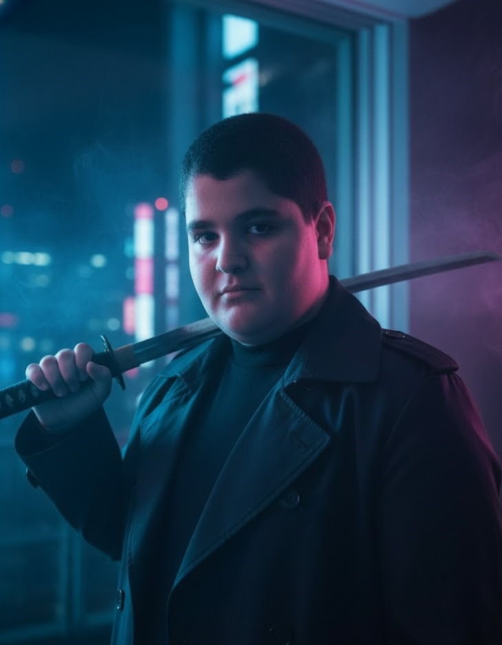

Computer Skills
I have strong computer skills and good knowledge of working with Windows, software, files, and everyday computer tools.
WELCOME TO MY WEBSITE
Hello! My name is Amirhossein and I am learning web design.
Explore My Website
WHO I AM
Hi! I'm Amirhossein Ranjbar, also known as AYG, an Iranian student born on June 24, 2012. I’m passionate about technology, computers, mathematics, and programming, and I enjoy learning new things and challenging myself.
I’m currently learning Python and web development, while working on personal projects to improve my programming and problem-solving skills. I’m especially interested in understanding how technology works and turning my ideas into real projects.
I am a big fan of gaming, and my favorite game is Dota 2. My brother introduced me to Dota 2 when I was seven years old, and it became one of my favorite games. Interestingly, Dota 2 also played an important role in my interest in technology and helped me improve my English by exposing me to English words, phrases, and communication while playing.
I am also very passionate about music. I listen to music in my free time, and my favorite artist is Eminem. Music is an important part of my interests and something I really enjoy.
I enjoy playing Dota 2 competitively, especially in the Mid Lane. Gaming has also helped me develop skills such as strategic thinking, decision-making, patience, and teamwork.
I would describe myself as curious, hardworking, competitive, creative, and always willing to learn.
WHAT I CAN DO
I have strong computer skills and good knowledge of working with Windows, software, files, and everyday computer tools.
I am learning HTML and CSS and currently building my own websites to improve my web development skills.
I am currently learning Python and practicing programming through small projects and problem-solving.
I enjoy solving challenging problems and finding different ways to reach a solution.
I can type at around 80 words per minute, allowing me to work quickly and efficiently.
I have Upper-Intermediate English skills and continue improving my vocabulary, reading, and communication.
As a competitive Dota 2 player, I have developed skills in strategic thinking, decision-making, teamwork, and staying focused under pressure.
I have a strong interest in mathematics and enjoy logical thinking, calculations, and solving mathematical problems.
I am always interested in learning new technologies, improving my skills, and challenging myself with new projects.
THINGS I ENJOY
I enjoy playing video games in my free time, and my favorite game is Dota 2. I mainly play Mid Lane, and some of my favorite heroes are Tinker, Invoker, Lina, Storm Spirit, Ember Spirit, Puck, Pangolier, and Void Spirit. I enjoy the strategic and competitive side of Dota 2, especially making decisions during difficult situations, adapting to different opponents, and trying to improve with every game. Gaming is not only a way for me to have fun, but also something that has helped me develop skills like strategic thinking, decision-making, patience, and teamwork.
I listen to music almost every day, whether I’m relaxing, studying, working on my projects, or just spending some free time. Music is something I always enjoy having around, and I like exploring different songs and artists. I usually listen to Eminem, but I also enjoy discovering new music and adding my favorite songs to my playlists.
Programming is one of my favorite hobbies because I enjoy creating things and solving problems with code. I am currently learning Python and web development, and I like working on personal projects to improve my skills.
I enjoy mathematics and challenging problems. I like using logical thinking to find solutions, understand different concepts, and challenge myself with problems that require creativity and careful thinking.
I am very interested in technology and computers. I enjoy exploring new technologies, learning how they work, and discovering new things about the digital world. I also like keeping up with the tools and technologies that can help me learn and create new projects.
FIND ME ONLINE
My Social Media
GitHub
My coding projects and repositories.
Email
Contact me by email.
Telegram
Connect with me on Telegram.
Spotify
Listen to my favorite music.